I have included links to the most important information on this page. Click the orange links to jump directly to that section.
The long-awaited artificial intelligence (AI) revolution has finally caught up to the lives of everyday people. Years ago, AI could only be accessed by graduate level researchers and international corporations. With the help of increasingly more powerful computers and community-led initiatives to decentralize AI knowledge, anyone with a modern laptop can access dynamic AI models. The change has shocked almost all industries. Now, people can use AI to write their papers, draw their drawings, and research their projects. This technology disrupting the global economy, and it is up to its users to determine where it will take the world.
Since 2018, I have worked with AI programming. Here are my main AI projects.
Definitions:
Fashion classification
This was my first project and most people generally begin their AI journey with this project. At the time, I did not understand much of the specifics. I mainly copied and pasted the code and ran it to see if it worked.
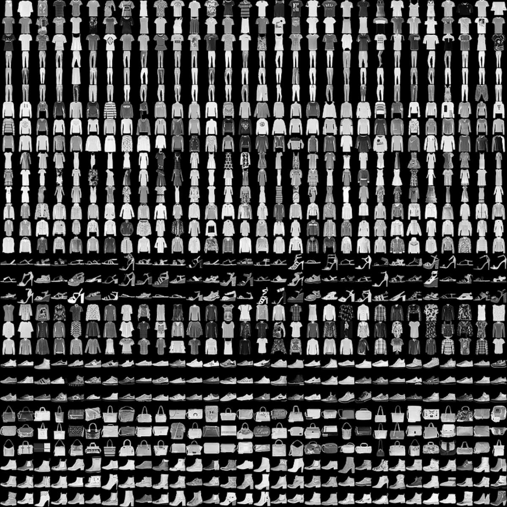
The AI model is fed a massive dataset of images. Each image is one of ten different fashion items. The model's job is to classify a given image into its correct category.
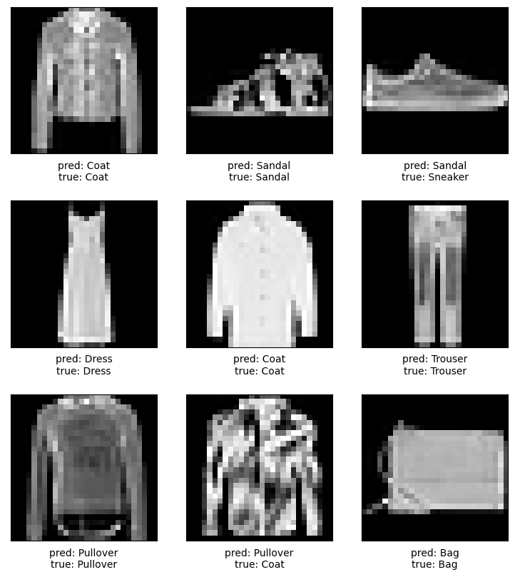
Sample predictions made by the model.
With a few rounds of training, the model performed at around 90% accuracy. The model still misclassified some items. However, generally these items were similar in shape (e.g. Sandal/Sneaker and Pullover/Coat).
Artificial face generation
This project aimed to create a face generation program. While the theory was difficult to grasp, the actual coding turned out to be rather simple.
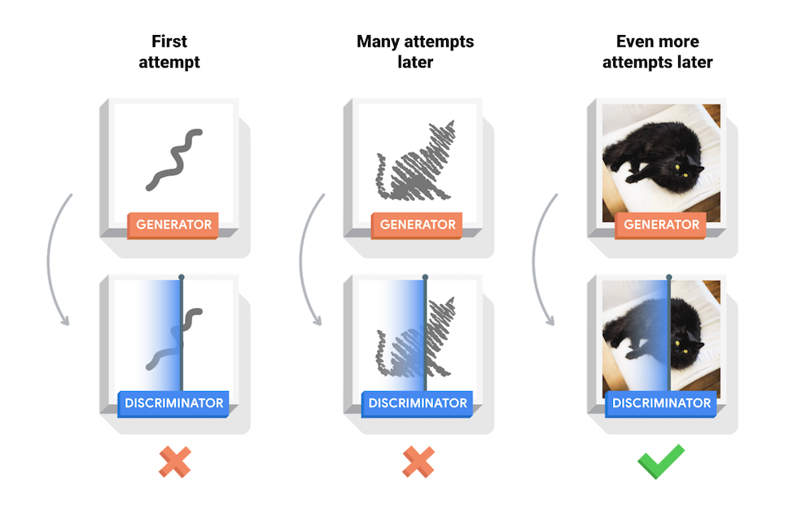
Two AI models compete with each other. Essentially, we are interested in making sure that the generator (which makes fake images) fools the discriminator (which classifies images as real or fake).
| Homemade | Industrial grade (DCGAN) | |
|---|---|---|
| Training time | 10 minutes | 40 hours |
| Dataset size | 8,500 images | 350,000 images |
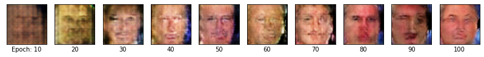
The performance of the model through training. Left. After 10 training iterations. Right. After 100 training iterations.
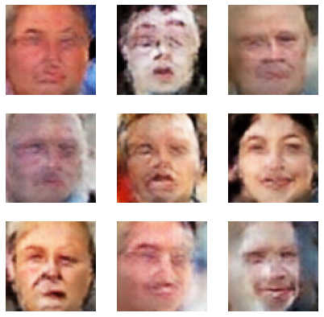
Sample images generated by the fully trained model.
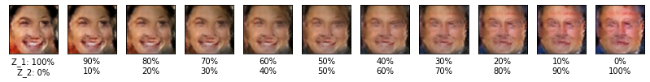
Left. Smiling female. Right. Neutral male.
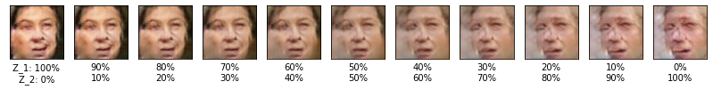
Left. Facing right. Right. Facing left.
The model can even combine two generated images.
Shakespeare generation
I did not work much with text over my AI studies mainly due to hardware limitations. Since there are so many words in the English language, the datasets quickly become too large for the average computer. This was one of my few text-based projects and it aimed to create a Shakespeare-themed text generator.
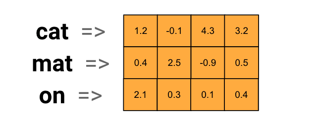
Each word is assigned a set of numbers. Generally, homemade models will use characters (26 letters) rather than words (40,000 common words) albeit with subpar performance.
| Homemade | Industrial grade (ChatGPT) | |
|---|---|---|
| Training time (adjusted) | 2.5 minutes | 500,000 hours |
| Dataset size | 1 MB | 570 GB |
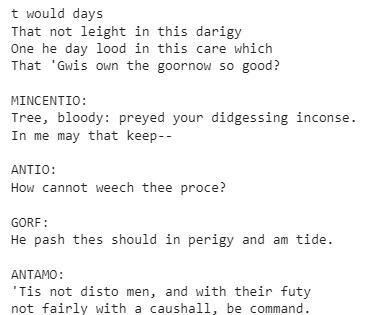
AI response to "JAMES:\nCome hither and see wha"
Temperature prediction
Time series forecasting is predicting what will happen in the future using past data. One example is analyzing temperature fluctuations.
| Homemade | Industrial grade (TFT) | |
|---|---|---|
| Training time | <1 minute | 6 hours |
| Dataset size | 3,000 items | 500,000 items |
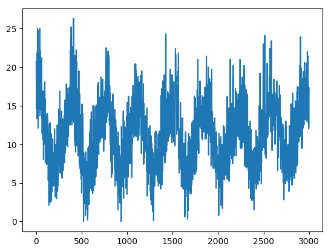
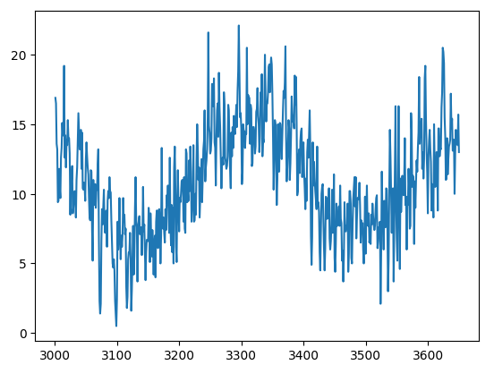
Daily temperature (°C) in Melbourne, Australia.Top. Training data. Bottom. Testing data that model does not see.
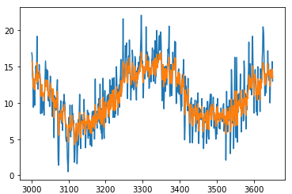
Orange. Model predictions. Blue. Actual values.
Dense Hamiltonian Monte Carlo (DHMC)
My most complex project to date. This project attempted to automate a statistical algorithm called Hamiltonian Monte Carlo (HMC).
HMC applies the laws of physics to sample from a complicated probability distribution.
My suggested method DHMC leverages the power of neural networks to boost this process. The novel algorithm was tested on two probability distributions compared to an existing autotuning method called the No-U-Turn Sampler (NUTS).
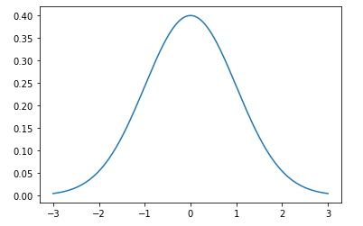
Standard normal distribution for baseline testing.
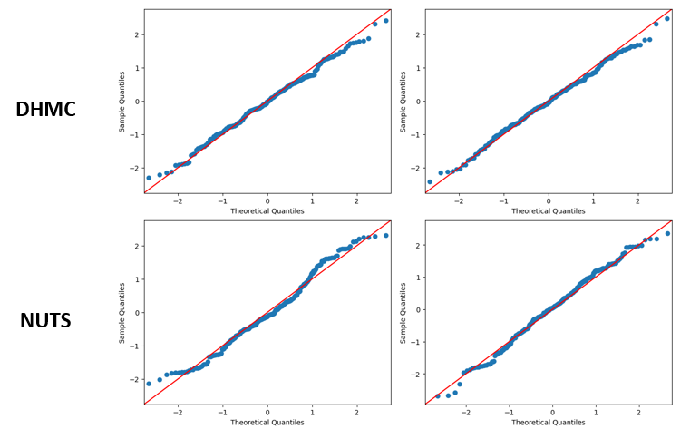
DHMC and NUTS sample quality shown by a QQ plot.
DHMC shows similar performance to NUTS while DHMC executes around three times faster than NUTS. How about for a more complicated distribution?
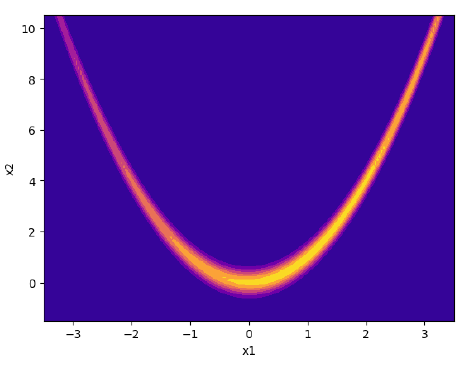
2D Rosenbrock distribution for deeper testing.
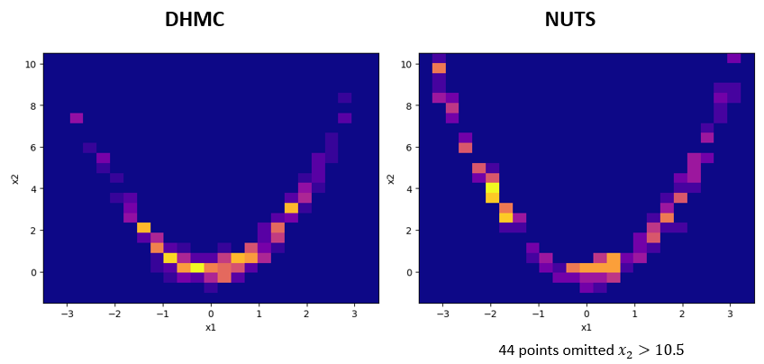
DHMC and NUTS sample quality.
DHMC converges to the high-density areas of the distribution quickly. NUTS tends to explore more of the distribution but ends up missing the important parts of the distribution. Not only, DHMC performs six-seven times faster than NUTS for the Rosenbrock distribution. In all, DHMC provides superior samples with less execution time.
Definitions:
Each computer stores its own copy of the blockchain, making the network decentralized.
I have attempted to implement my own blockchain using Java. I based it off of the Ethereum protocol. Ethereum's algorithm requires nodes to run a program called an Ethereum client. This program makes sure that the network is following the rules.
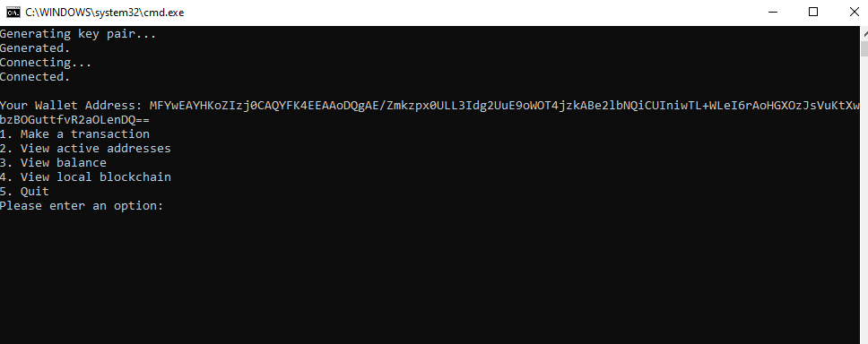
Each node can interact with each other through user input.
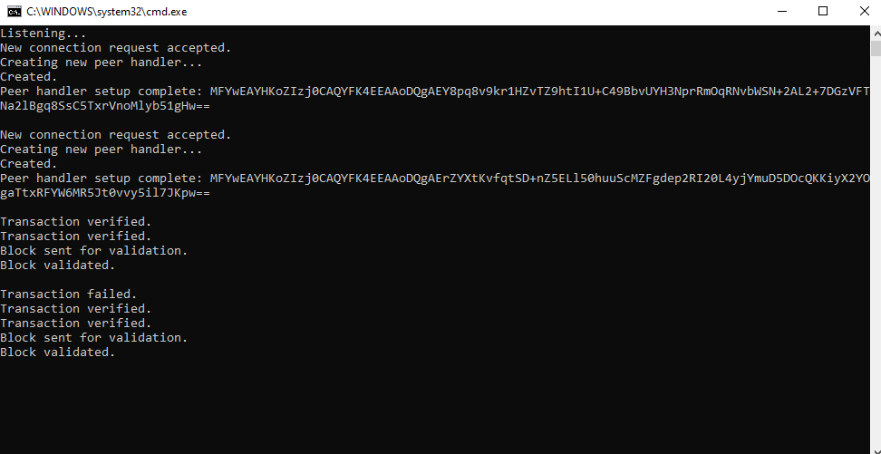
The client program handles node requests and moderates network activity.
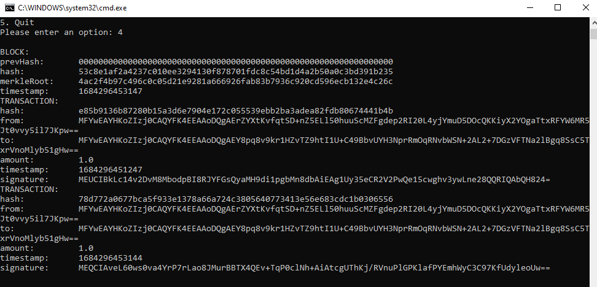
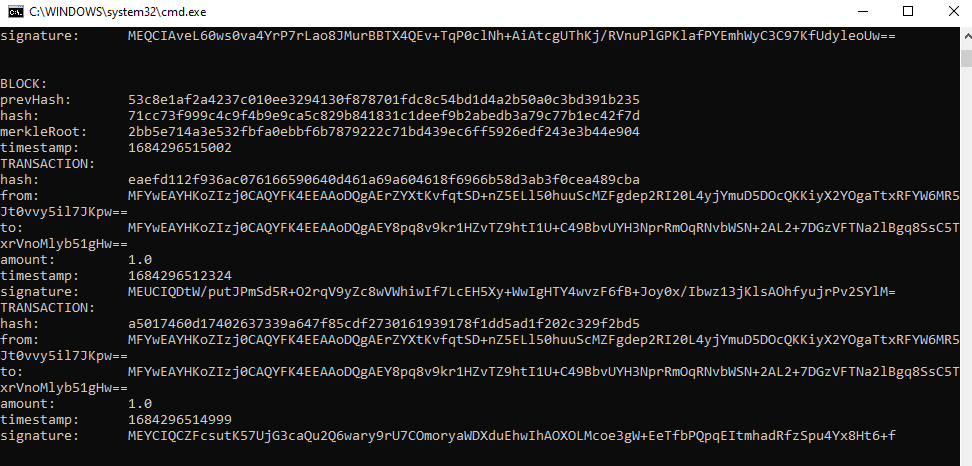
After a set number of transactions, a new block is created and broadcast to each node. Top. First block. Bottom. Second block.
On a public blockchain, there would be several independent versions of the client program and much more security measures.
GUIs are what connect code to users. Any type of visual interface that the user can interact with can be considered a GUI. Without GUIs, the user would have to interact with text on a screen, using only their keyboard to input directions.
This is a Yahtzee program using a GUI.
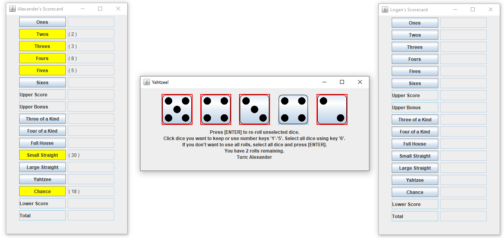
The Yahtzee program consists of a dice panel and multiple scorecard panels. The user selects dice to keep.
Live gameplay of two player Yahtzee.